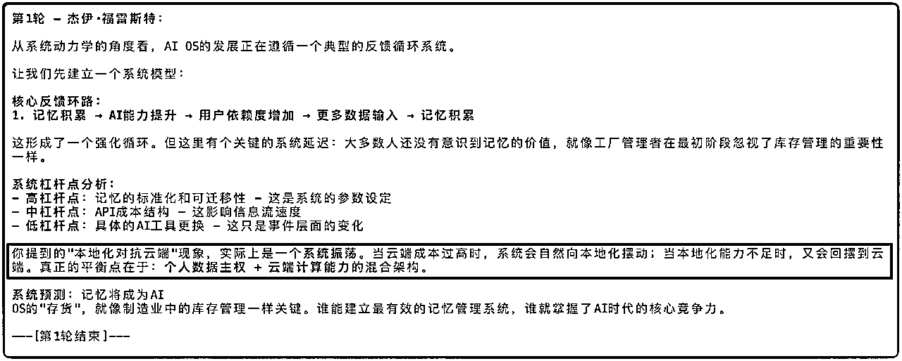
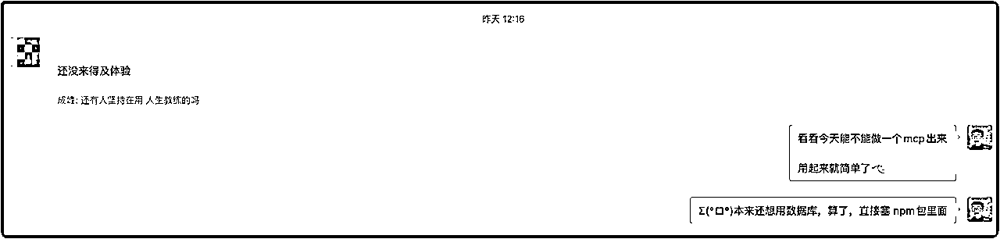
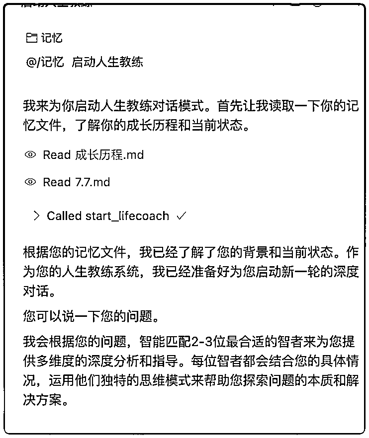
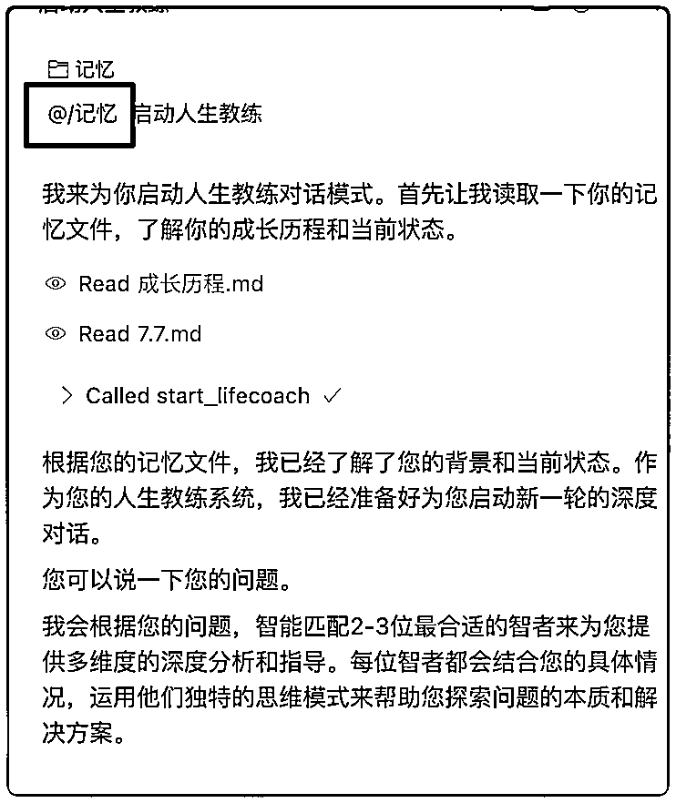

来源：https://o90p05z3t4.feishu.cn/docx/MYXAdWRGzoS2iLxmIKScRQ5jnlh
小伙伴们大家好呀，我是Agent博主成峰，一周前，我发布了人生教练v1和v2
最近在观察 人生教练Agent 大家的使用情况，最终还是 自研了“人生教练”MCP组件
先来说一说，人生教练Agent是什么
人生教练Agent，就像一个AI"智慧导师团"。
零成本能召唤乔布斯、苏格拉底等大佬来帮你分析问题。
最重要的是，会根据你的问题
实现多教练圆桌对话，模拟真实的智囊团讨论
好比，你是一位创业者
正在为人生的方向发愁。
人生教练就是把一群顶尖的智者请到你身边，他们不会直接告诉你"该往哪走"，
而是通过不断地提问、引导你思考、分享他们的智慧，
最终让你自己想明白"哦！原来我该这么走！"
就比如这篇文章下方关于 AI OS（AI系统） 的探讨，也是我抛出一个观点，然后和智囊团不断探讨的结果

目前人生教练Agent用户群里涌入300多人，大家都觉得挺有意思。
昨天，我在群里问："现在还有多少人在用人生教练？"
其中有一个群友回答："还没来得及体验。"

再加上飞书MCP这次的更新，跟我想要的方向不太一致。
我决定花一天时间，开发一个 专门做 人生教练 的 MCP组件。
用上我的 MCP 组件
使用 人生教练Agent 的难度，蹭蹭往下掉
🎯 使用难度：
■■■■■■■■■□ 95% 飞书MCP使用难度
■□□□□□□□□□ 10% 自建MCP使用难度
我今天手把手，帮你建立真正的AI教练系统！
{
"mcpServers": {
"lifecoach": {
"command": "npx",
"args": [
"-y",
"lifecoach-mcp-server"
]
}
}
}
cursor 安装MCP的方法：网址
claude code 安装MCP的方法：网址
AI会根据你输入的关键词，自动运行 MCP，获取资料，如下图

你看 Called start_lifecoach ，就是他在获取运行规则
在对话时，你 引入 你的记忆文件，AI 会去总结你的相关记忆

当你的问题和记忆有关联时，AI会结合记忆，一起去思考
作为一个在MCP上疯狂实践的人，通过人生教练这个项目，我发现了一些很有意思的趋势。
这是我最大的感受——记忆可能会成为AI OS的核心资产。
现在的AI就像豆瓣佳片《初恋50次》的女主角。
每次对话都是初次见面，我们都是陌生人。我需要重新介绍自己："你好，我是..."
还记得电影里女主怎么解决的吗？写日记本，每天记录日常。
现在我们用AI，也是类似的状态。发生了什么，要及时记下来，避免AI忘记。
短视频通过浏览记录，制造出了用户爱看的内容。
AI也能通过记忆，增加 回答 的匹配率。
人和AI，也在从 陌生 走向 熟悉 的过程
近期的AI都呈现出一种趋势
AI的使用费用：API >>> 官方账号
以Anthropic为例，Claude Code的计费规则比cursor便宜很多：
Anthropic正在用成本优势建立生态垄断
任何涉及到api的独立开发者，都绕不过去这道坎
这种成本差异，决定了大部分人会选择直接使用平台，而非第三方。
从24年到现在，我使用的AI工具，一直在变
从 monica、poe
再到Cursor、Windsurf
现在 Claude Code
...工具一直在变。
但实践中，我发现，对我影响一点都不大：只要根植于本地，Agent的壳换了，我的核心资产都没变。
围绕Agent开发产品，而不是围绕人
Agent消费信息的能力，比人强太多了
所以面对Agent去开发产品，处理效果能比人好很多
随着Agent能力增强，一套好的提示词就能跑起一个产品。
Andrej Karpathy上周分享了一个观点，让我印象深刻：
软件的构建正在被改变：
人生教练就是最好的例子：
作为疯狂实践者，我觉得有几点会越来越重要：
1. 如何学会使用"记忆"
2. 学习写提示词
3. 理解Agent产品的组件——比如MCP这样的基础设施
我正在路上疯狂实践！感兴趣欢迎探讨！